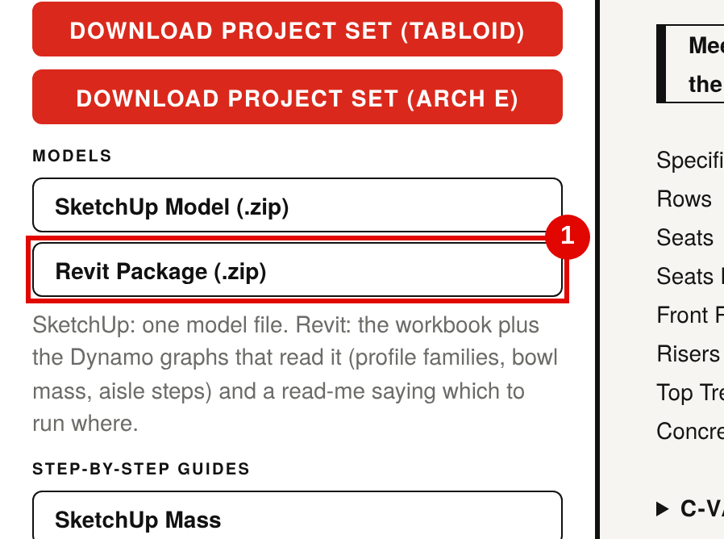
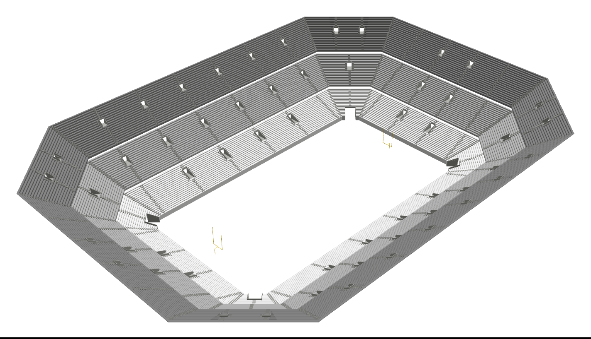
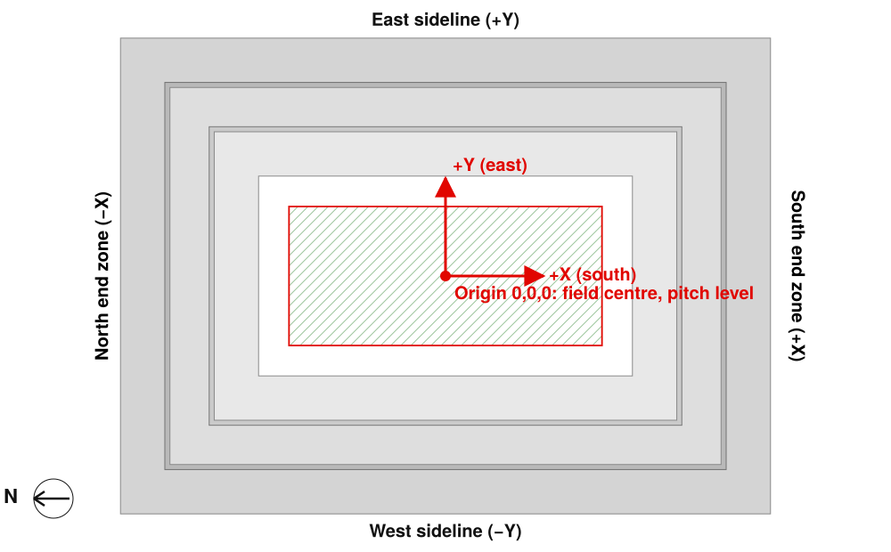

Download the Revit package and run the Dynamo graph in a Generic Model family to create the bowl mass.
You need
Revit 2024 with Dynamo 2.17 (installed with Revit, no extra packages)
The bowl you want, open in Sightline Schematic
You get
One family holding the whole bowl: every stand extruded along the point-of-focus boundary, corners included
One subcategory per stand, for colours and visibility
Mass category, so Revit can make Mass Floors
Steps
1
Download the Revit package
In Sightline Schematic, under Deliver › Models, click Revit package (.zip). The browser saves Stadium_Bowl_Revit_R2024.zip.

Deliver › Models. (1) Revit package (.zip): the workbook, the Dynamo graphs and these guides.
2
Unzip it to a folder you keep
Extract the zip to the project folder, for example …\Stadium\Sightline\. Dynamo reads the workbook from that folder, so do not run it from inside the zip.
Stadium_Bowl_Revit_R2024.zip
XLSX
Stadium_Bowl_Excel_YYYYMMDD_hhmmss.xlsxbowl data, input 1 of every graph
Stadium_Bowl_Aisle_Step_Family_Spec.txtaisle step family
PDF
Stadium_Bowl_Mass_Revit_R2024_Guide.pdfthis guide
PDF
Stadium_Bowl_Profile_R2024_Guide.pdfprofile guide
TXT
READ ME.txtwhich graph to run where
The workbook name carries the date and time you downloaded it, so a new download never overwrites an older bowl.
3
Start a new Generic Model family
File›New›Family…
Pick Metric Generic Model.rft (in …\Family Templates\English\) or Generic Model.rft (in …\English_I\). Units do not matter: the graph builds in true size.
Do not use a Conceptual Mass template (Mass.rft): it cannot hold the extrusions and revolves the graph makes, and the graph stops with a message.
Save the family now, as Stadium_Bowl_Mass_Revit_R2024.rfa.
4
Open the graph in Dynamo
Manage›Visual Programming›Dynamo
In Dynamo, File › Open and pick Stadium_Bowl_Mass_Revit_R2024.dyn. Set the run mode at the bottom left to Manual.
Or use Manage › Dynamo Player, browse to the unzipped folder and click the graph: Player shows the same three inputs.
Schematic of the graph inputs (numbered as in the graph). Click Browse on input 1 and pick the workbook from the unzipped folder.
Input 2 True changes the family category to Mass, which you need for Mass Floors. Leave it False to keep a Generic Model.
Input 3 True draws the point-of-focus boundary as model lines: handy to check the bowl against the field.
Click Run. The Result node lists the stands built (extrusions, revolves, corner plates) and the category. Running again replaces the bowl; it never stacks a second copy.
6
Check the family

Expected result in the family 3D view: the bowl as Sightline shows it in its 3D view.
Create › Properties › Family Category and Parameters shows Mass (if input 2 was True).
Manage › Object Styles lists one subcategory per stand (Sightline T1 E, Sightline T1 SEZ and so on), with a colour per tier.
The family origin (where the Center reference planes cross) is the field centre at pitch level.

Family and project coordinates: origin at the field centre, north end zone on −X, East sideline on +Y. The red line is the point-of-focus boundary (input 3).
7
Load it into the project and place it
Create›Family Editor›Load into Project
As a Mass: place it with Massing & Site › Place Mass (turn on Show Mass if Revit asks). As a Generic Model: Architecture › Component › Place a Component.
Place it in a plan at the level of the pitch. To land it on the project origin, make the Project Base Point visible (Visibility/Graphics › Site), then Move the bowl from the crossing of its Center reference planes to the base point.
Keep the bowl on the project origin if you will also run Stadium_Bowl_Aisle_Step_R2024.dyn: it places the aisle steps in the same coordinates.
8
Mass Floors (optional)
Select the bowl›Modify | Mass›Model›Mass Floors
Tick the levels to cut. Revit reports gross floor area per level from the bowl solid. This works only when the family category is Mass (input 2 True).
If the graph stops
Message in the Result node
What to do
Run this in a family, not the project
You ran it with a project open. Do step 3 first and run it in that family.
This is a conceptual mass family
Start again from Metric Generic Model.rft and set input 2 to True.
Pick the workbook you exported from Sightline
Input 1 is empty or points at the zip. Browse to the .xlsx in the unzipped folder.
Tier … does not join up
The workbook is from an older Sightline version. Download the Revit package again.
Python errors on every node
Dynamo must run the Python nodes as CPython3 (the default in Revit 2024). Right-click a Python node and check the engine.